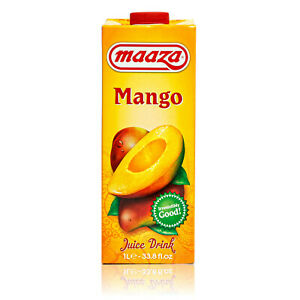

<h1>Mangosaft</h1>

<p><em>Very tasty and healthy</em></p>
<h4>Ingredients</h4>
<ul>
    <li>One Mango</li>
</ul>
<h4>Steps</h4>
<ol>
    <li>Remove Mango skin with a knife</li>
    <li>Cut into little pieces</li>
    <li>Mix it until desired thickness is achieved</li>
    <li>Drink!</li>
</ol>